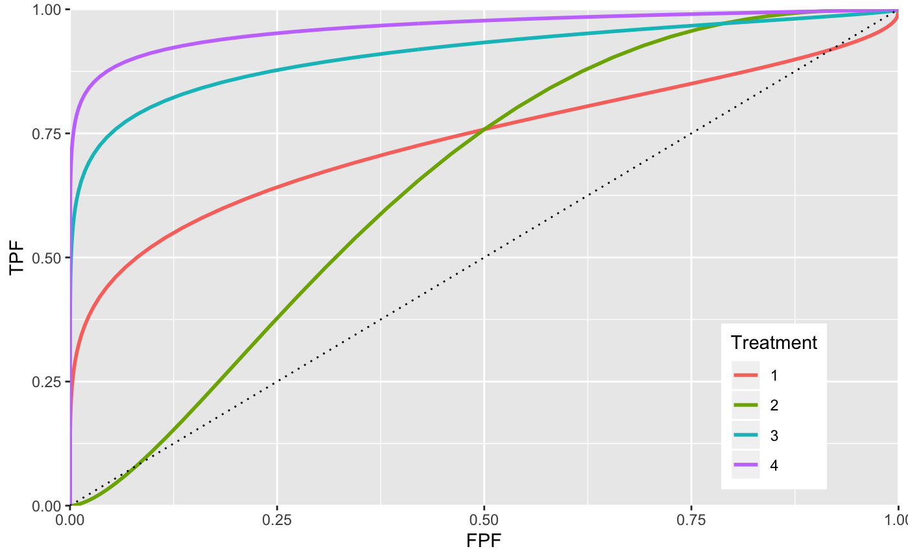
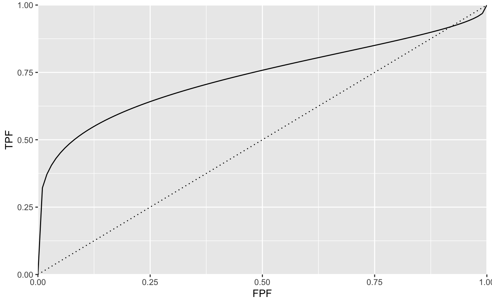
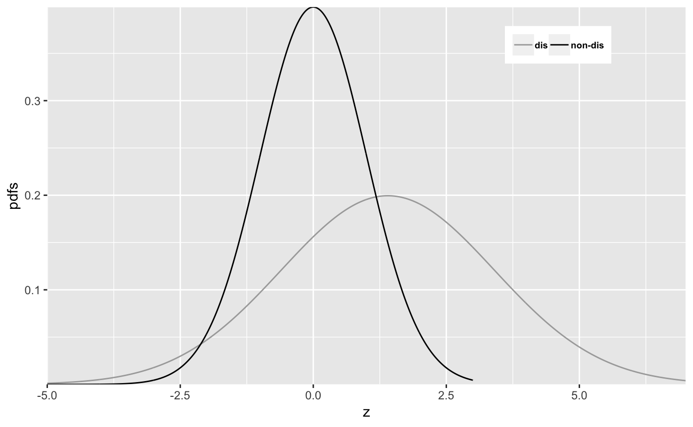

Ch20V1improperROCs.RmdThe binormal model has two parameters, a and b. The signal (or diseased cases) distribution has unit standard deviation. The noise (or non-diseased cases) distribution has standard deviation b. The a parameter is the separation of the two distributions.
Binormal model fits invariably lead to ROC curves that inappropriately cross the chance diagonal, leading to a prediction of a region of the ROC curve where performance is worse than chance, even for expert observers. By convention, such curves are termed improper. This vignette illustrates improper ROCs predicted by the binormal model.
aArray <- c(0.7, 0.7, 1.5, 2)
bArray <- c(0.5, 1.5, 0.5, 0.5)
chance_diag <- data.frame(x = c(0,1), y = c(0,1))
p <- PlotBinormalFit(aArray, bArray) +
scale_x_continuous(expand = c(0, 0)) +
scale_y_continuous(expand = c(0, 0)) +
theme(legend.position = c(0.85, 0.2))
p <- p + geom_line(data = chance_diag, aes(x = x, y = y), linetype="dotted")
print(p)
The red plot is the clearest example of an improper ROC. This type of curve occurs whenever b < 1. The chance line crossing near the upper right corner, around (0.919,0.919), and the fact that the ROC curve must eventually reach (1, 1) implies the curve must turn upwards as one approaches (1, 1), thereby displaying a “hook”. Whenever b != 1 the hook is there, regardless of whether it is easily visible or not. If b < 1 the hook is near the upper right corner. If b > 1 the hook is near the origin (see green line, corresponding to b = 1.5). With increasing a the hook is less prominent (blue line corresponding to a = 1.5, b = 0.5 and purple line corresponding to a = 2, b = 0.5). But it is there.
The reason for the “hook”" becomes apparent upon examination of the pdfs. 
#> a = 0.7 , b = 0.5Since b < 1, the diseased pdf is broader and has a lower peak (since the integral under each distribution is unity) than the non-diseased pdf. Sliding an imaginary threshold to the left, starting from the extreme right, one sees that initially, just below z = 7, the diseased distribution starts being “picked up” while the non-diseased distribution is not “picked up”, causing the ROC to start with infinite slope near the origin (because TPF is increasing while FPF is not). Around z = 2.5 the non-diseased distribution starts being “picked up”, causing the ROC slope to decrease. Around z = -3, almost all of the non-diseased distribution has been “picked up” which means FPF is near unity, but since not all of the broader diseased distribution has been “picked up”, TPF is less than unity. Here is a region where TPF < FPF, meaning the operating point is below the chance diagonal. As the threshold is lowered further, TPF continues to increase, as the rest of the diseased distribution is “picked up” while FPF stays almost constant at unity. In this region, the ROC curve is approaching the upper right corner with almost infinite slope (because TPF is increasing but FPF is not).